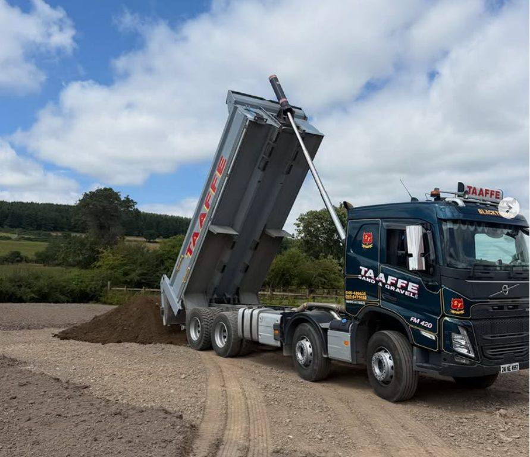

Sand, gravel & stone delivered across Leinster
Quarried and recycled aggregates from our yard at Blacktrench, Naas. Full loads for sites and contractors, tonne bags for drives, patios and gardens, tipped where you want them.

Stone
The base under everything. Hardcore and fines for drives, yards, roadways and anything that needs to carry weight.
Certified 804
Clause 804 sub-base for drives, yards, hardstanding and under concrete. Compacts down hard and drains well.
Ballylusk dust
Fine crushed stone that compacts tight. Used to blind 804 and to bed paths, sheds and patio bases.
Sand
Building, paving and plastering sand, by the load for sites or by the tonne bag for smaller jobs.
Mortar sand
For block laying, brick work and rendering mixes.
Paving sand
Sharp sand for bedding slabs, setts and kerbs.
Plastering sand
Washed and graded fine sand for plastering and fine finishes.
Gravel & pebble
Decorative chips for drives and beds, clean pebble for drainage, and graded gravel for batching concrete.
Chips
Drives, paths and beds. 6, 10, 14 or 20 mm.
Ballylusk chips
Wicklow Ballylusk gravel for driveways and landscaping. 10 or 14 mm.
Drainage pebble
Soakaways, French drains and land drainage. 6, 10, 20 or 40 mm.
Batch gravel
Graded gravel for concrete batching.

Full loads or tonne bags
Full loads
Up to 20 tonnes on an eight-wheel tipper, tipped where you point. The best value per tonne for sites, yards and big drives.
Small loads
A few tonnes for a smaller job, when a full load would be too much.
Tonne bags
Handy where access is tight or you are working through it over a few weekends. No job too small.
Priced per load, on the day
Ring 045 430 536, or 087 647 1438 / 087 424 1827, and we will give you the whole cost, delivery in.